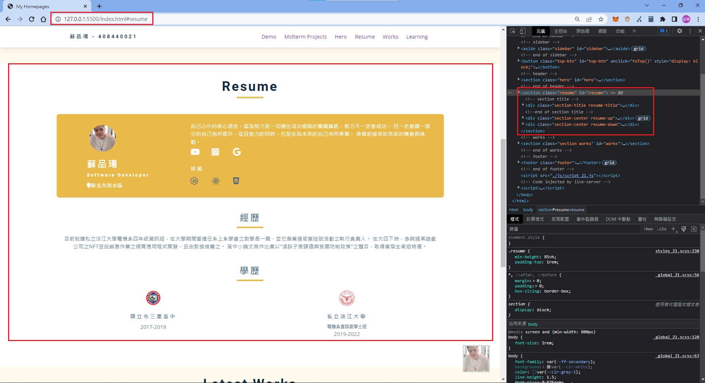
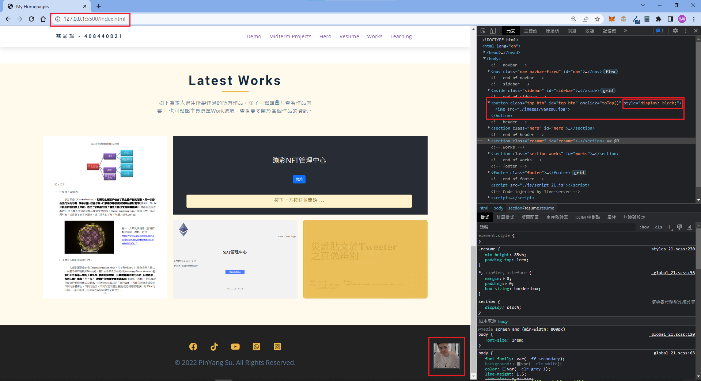
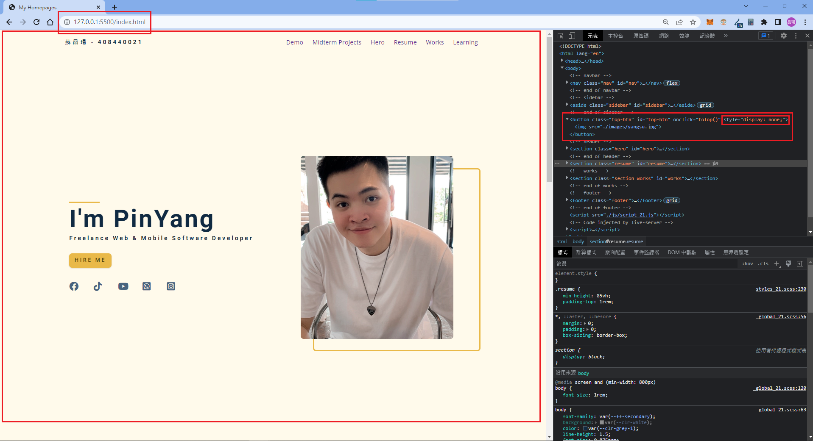
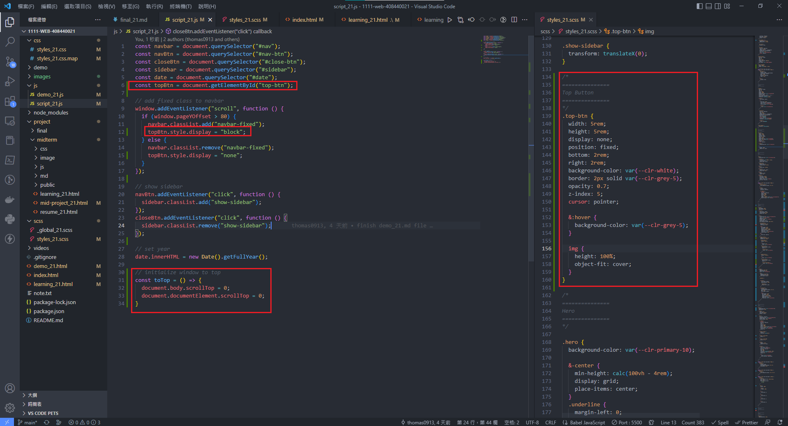

如果要採用期中所設計的履歷表版面來延伸，我覺得我不喜歡，因此我參考了網路上一些比較好看的版面， 來試試看可不可以刻畫出差不多的外觀。
設計的概念差不多和期中履歷表一樣，主要利用grid屬性來分配版面的切割，並且搭配和主頁一樣的色系。
當單頁網頁內容越多越長時，從頁面底部回至頂端總是需要一直滾動卷軸，分常花費時間， 因此許多網站之網頁會在頁面右下角，加上回至底部的快捷按鈕，因此此次自主學習的部分， 將會為我自己的網站加上此方便的置頂按鈕。
當閱覽至頁面底部時，可以看到右下角有一個我個人的大頭貼照， 並且也可以注意到，button的HTML標籤樣式屬性display為none。
接著可點擊此置頂按鈕，可以瞬間讓頁面回到最頂端， 並且也可以發現，button的HTML標籤樣式屬性display已經變為block了。
此功能主要的關鍵為，需要用JavaScript來監聽按鈕的標籤， 且當畫面超過所設定的距離時，則會出現， 反之當點擊按鈕後，會立即呼叫重置函示，重置畫面卷軸為0。
在期中過後到期末的期間，我發現的確我忽視了CSS的重要性， 譬如說position這個樣式屬性，他居然可以完全的操控網頁上， 每個物件之間的位置關係，並且可進一步的簡單調整物件的位置。 直到現在，我不敢說我多會寫網頁，反而我覺得這堂課所教的東西， 只是佔了所有知識的不到20%，不過對於基礎的底子，是真的有比之前還要了解了不少東西， 還記得上次去書店的時候，有大概找了一下CSS的書，居然整本比字典還要厚....。 學完這學期的網頁知識後，我將還會繼續撰寫網頁，甚至是接觸後端底層的技術，相信不會有學完的一天。